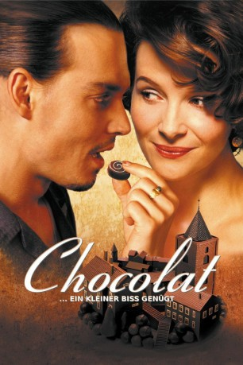

Auszeichnungen: für 5 Oscars nominiert
 gesehen am 09.03.2015
gesehen am 09.03.2015Alternativ: Chocolat
Auszeichnungen: für 5 Oscars nominiert gesehen am 09.03.2015
 
 IMDB-Wertung: 7.3 / 10
IMDB-Wertung: 7.3 / 10  Metascore:
Metascore: 
Ein verschlafenes Dorf in Frankreich im Jahre 1959. Hier glauben die Bewohner an "Tranquillite", an die Ruhe und Stille. Man ist ordentlich und gottesfürchtig, wie es sich gehört. Da kommt Vianne Rocher (Juliette Binoche) mit ihrer minderjährigen Tochter in die Stadt, mietet die leerstehende Patisserie an und eröffnet einen Schokoladenladen. Da sie nicht verheiratet ist, nicht in die Kirche geht und den Laden in der Fastenzeit öffnet, eckt sie bei vielen Leuten, besonders dem Bürgermeister an.Doch ihre Spezialitäten zeigen ihre Wirkung bei den ersten Leuten, die wie nach einem langen Winter allmählich auftauen. Vianne nimmt sich Zeit, redet mit den Leuten und gewinnt das Vertrauen einiger. Doch es gibt immer wieder Probleme, vor allem als sie sich mit dem Flußzigeuner Roux (Johnny Depp) anfreundet, ein Nomade wie sie selbst ...
Jahr: 2000
Dauer: 121 Minuten
FSK: 6
Land: England Studio: Senator FilmTonspuren: DTS - ,
Untertitel:
Auflösung: 1080p (1920×1080) Größe: 11980 MB
Regisseur: Lasse Hallström
Drehbuch: Joanne Harris, Robert Nelson Jacobs
Soundtrack: Rachel Portman
Darsteller:
 Alfred Molina als Comte de Reynaud
Alfred Molina als Comte de Reynaud Carrie-Anne Moss als Caroline Clairmont
Carrie-Anne Moss als Caroline Clairmont Hélène Cardona als Francoise 'Fuffi' Drou
Hélène Cardona als Francoise 'Fuffi' Drou Ron Cook als Alphonse Marceau
Ron Cook als Alphonse Marceau Hugh O'Conor als Father Henri
Hugh O'Conor als Father Henri John Wood als Guillaume Blérot
John Wood als Guillaume Blérot Lena Olin als Josephine Muscat
Lena Olin als Josephine Muscat Peter Stormare als Serge Muscat
Peter Stormare als Serge Muscat Leslie Caron als Madame Audel
Leslie Caron als Madame Audel Juliette Binoche als Vianne Rocher
Juliette Binoche als Vianne Rocher Judi Dench als Armande Voizin
Judi Dench als Armande Voizin Johnny Depp als Roux
Johnny Depp als Roux João Costa Menezes als Gypsy , uncredited
João Costa Menezes als Gypsy , uncreditedDatei: X:\2000\Chocolat... ein kleiner Biss genügt (2000, FSK6, 1920x1080).mkv seit 02.02.2015
Festplatte: HD 1996-2002
 Es gibt insgesamt 82 Filme in der Gruppe '2000'
Es gibt insgesamt 82 Filme in der Gruppe '2000'